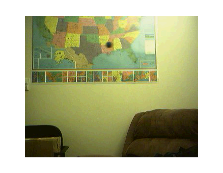
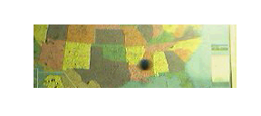
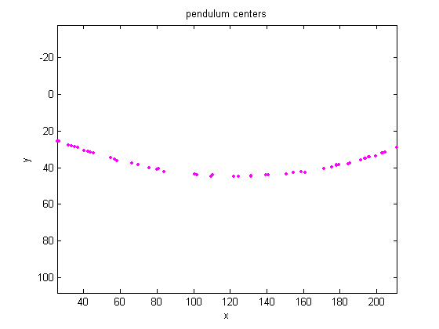
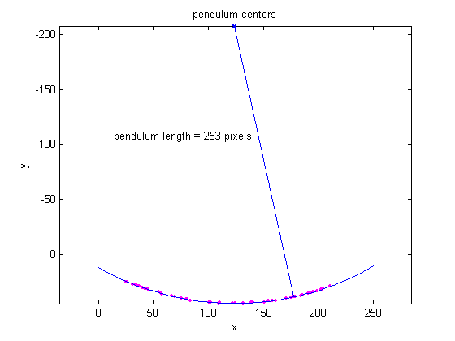

You can capture images in a time series with the Image Acquisition Toolbox and analyze them with the Image Processing Toolbox. This demo shows you how to calculate the length of a pendulum in motion.
Load the image frames of a pendulum in motion. The frames in the MAT-file pendulum.mat were acquired using the following functions in the Image Acquisition Toolbox.
% Access an image acquisition device (video object). % vidobj=videoinput('winvideo',1,'RGB24_352x288'); % Configure object to capture every fifth frame. % set(vidobj,'FrameGrabInterval',5); % Configure the number of frames to be logged. % nFrames=50; % set(vidobj,'FramesPerTrigger',nFrames); % Access the device's video source. % src=getselectedsource(vidobj); % Configure device to provide thirty frames per second. % set(src,'FrameRate','30'); % Open a live preview window. Focus camera onto a moving pendulum. % preview(vidobj); % Initiate the acquisition. % start(vidobj); % Wait for data logging to finish before retrieving the data. % wait(vidobj, 10); % Extract frames from memory. % frames = getdata(vidobj); % Clean up. Delete and clear associated variables. % delete(vidobj) % clear vidobj %load MAT-file load pendulum; immovie(frames);
You can see that the pendulum is swinging in the upper half of each frame in the image series. Create a new series of frames that contains only the region where the pendulum is swinging.
To crop a series of frames using imcrop, first perform imcrop on one frame and store its output image. Then use the previous output's size to create a series of frame regions. For convenience, use the rect that was loaded by pendulum.mat in imcrop.
nFrames = size(frames,4); first_frame = frames(:,:,:,1); first_region = imcrop(first_frame,rect); frame_regions = repmat(uint8(0), [size(first_region) nFrames]); for count = 1:nFrames frame_regions(:,:,:,count) = imcrop(frames(:,:,:,count),rect); end immovie(frame_regions);
Notice that the pendulum is much darker than the background. You can segment the pendulum in each frame by converting the frame to grayscale, thresholding it using im2bw, and removing background structures using imopen and imclearborder.
% initialize array to contain the segmented pendulum frames. seg_pend = false([size(first_region,1) size(first_region,2) nFrames]); centroids = zeros(nFrames,2); se_disk = strel('disk',3); for count = 1:nFrames fr = frame_regions(:,:,:,count); imshow(fr) pause(0.2) gfr = rgb2gray(fr); gfr = imcomplement(gfr); imshow(gfr) pause(0.2) bw = im2bw(gfr,.7); % threshold is determined experimentally bw = imopen(bw,se_disk); bw = imclearborder(bw); seg_pend(:,:,count) = bw; imshow(bw) pause(0.2) end
You can see that the shape of the pendulum varied in different frames. This is not a serious issue because you just need its center. You will use the pendulum centers to find the length of the pendulum.
Use bwlabel and regionprops to calculate the center of the pendulum.
for count = 1:nFrames lab = bwlabel(seg_pend(:,:,count)); property = regionprops(lab,'Centroid'); pend_centers(count,:) = property.Centroid; end
Display pendulum centers using plot.
x = pend_centers(:,1); y = pend_centers(:,2); figure plot(x,y,'m.'), axis ij, axis equal, hold on; xlabel('x'); ylabel('y'); title('pendulum centers');
Rewrite the basic equation of a circle: (x-xc)^2 + (y-yc)^2 = radius^2, where (xc,yc) is the center, in terms of parameters a, b, c as x^2 + y^2 + a*x + b*y + c = 0, where a = -2*xc, b = -2*yc, and c = xc^2 + yc^2 - radius^2.
You can solve for parameters a, b, and c using the least squares method. Rewrite the above equation as a*x + b*y + c = -(x^2 + y^2), which can also be rewritten as [a;b;c] * [x y 1] = -x^2 - y^2. Solve this equation using the backslash(\) operator.
The circle radius is the length of the pendulum in pixels.
abc = [x y ones(length(x),1)] \ [-(x.^2 + y.^2)]; a = abc(1); b = abc(2); c = abc(3); xc = -a/2; yc = -b/2; circle_radius = sqrt((xc^2 + yc^2) - c); pendulum_length = round(circle_radius)
pendulum_length = 253
Superimpose circle and circle center on the plot of pendulum centers.
circle_theta = pi/3:0.01:pi*2/3; x_fit = circle_radius*cos(circle_theta)+xc; y_fit = circle_radius*sin(circle_theta)+yc; plot(x_fit,y_fit,'b-'); plot(xc,yc,'bx','LineWidth',2); plot([xc x(1)],[yc y(1)],'b-'); text(xc-110,yc+100,sprintf('pendulum length = %d pixels', pendulum_length));